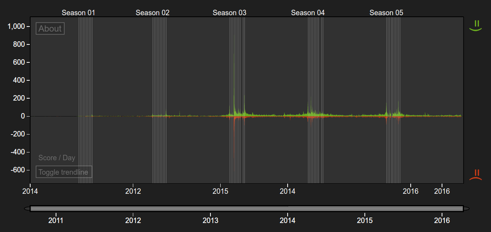
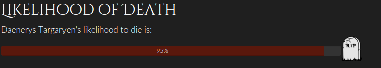
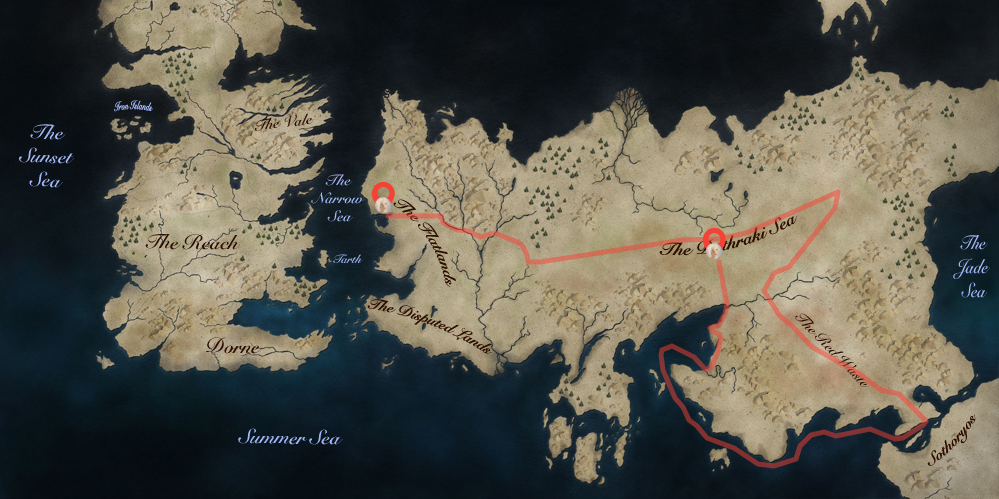

Daenerys. Khaleesi. Mother of Dragons. Mhysa - a queen with a growing list titles and an even bigger list of reasons to take her seriously. Ever since king Robert dethroned the Targaryens, she has been seeking for a way to win back the Iron Throne. Let’s face it, the moment Daenerys let Drogo kill her (admittedly annoying) brother, that's when we all knew that this young girl is playing to win. Here is why we believe that soon she will be sitting on the Iron Throne.
She’s commanding the Unsullied

In case you want to take a city back, it is always a good idea to bring a private army. Daenerys has apparently done her homework on warmonger best practices and bought her very own battalion - the Unsullied - by killing their former owner (#justdaenerysthings). Even with significantly less testicles or nipples compared to your average Essos man, those guys are anything and everything you could wish for when you absolutely need some people dead. Still in doubt? See them in action.
Daenerys is the people’s queen

With the US presidential elections approaching, maybe it’s time for a small thought experiment. Imagine you could vote for…


A religious fanatic in charge of what is basically the Game of Thrones equivalent of ISIS
A wimpy teenager with no experience whatsoever who should have stayed a minor character anyway
A young, dynamic civil rights activist, running around Essos freeing slaves in the thousands, who’s known for her zero-tolerance policy regarding the establishment
… Who would you choose? Heh? Not so hard, right? Daenerys Targaryen is pretty much our Game of Thrones Bernie Sanders. Only she is slightly more attractive. Sorry Bern.
See what Twitter thinks about Daenerys Targaryen with GoT show's sentiment analysis tool:
As you can see, she is even among the most popular characters (rank 4, 10th of April) in the real world! Feel the Daern, people!
She has a bunch of dragons

… Is there a reason we’re still debating this? Seriously? Even though her lathery scaled friends started out as cute little hatchlings in season 1, those things are huge now. Huge! We all saw them eat the leaders of the great families in the season 5 episode “Kill the boy” (S05E05) – and as countless fantasy franchises suggest, if you have dragons by your side, chances are you’re going to bring home a victory.
… Sooo, things are set, right?
Well, almost. In Game of Thrones, there’s always a hint of uncertainty – and you have to admit that a lot of people
would like to see Daenerys disappear. Just check out this attempt on
her life for example. While we here in the got.show editorial department are confident that she will end up being
victorious, our machine learning algorithm is a lot less optimistic. The algorithm mostly takes family
history into account, and since her family is nearly extinct, her calculated likelihood of death is pretty high.
See our latest prediction here:

Alt text: Daenery’s calculated percentage likelihood of death
No reason to be worried, though. Valar morghulis, remember?
Follow Daenerys long journey through Essos
Daenerys Targaryen put on the map – Game of Thrones character movements